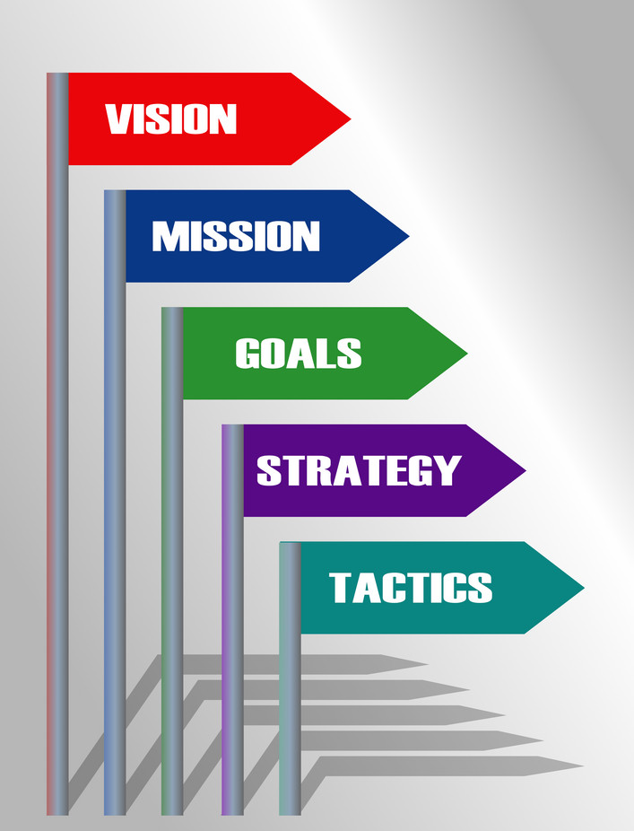
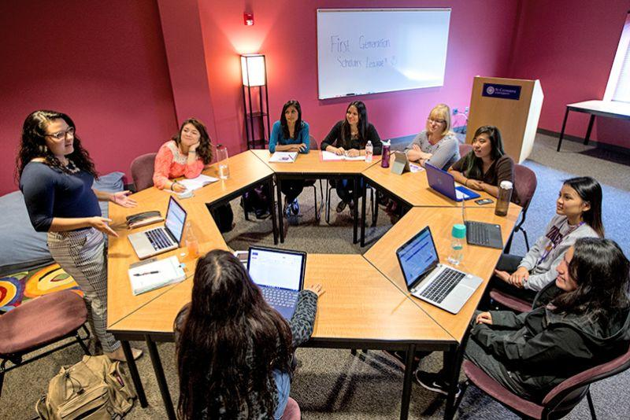

My strats to run ARC & IEEE-CIS & LOOP or any other club
The Wiki definition of an Institution is:
a humanly devised structure of rules and norms that shape and constrain individual behavior. All definitions of institutions generally entail that there is a level of persistence and continuity.
So it’s all about law, order, for the sake of continuity and sustainability. This is what this is about, creating rules and regulations for maintaining the society for the mission and cause that it is.

To begin with I would like to state the mission and vision and the motivation of the society. It is very clear that students have a lack of motivation, lack of belonging, and lack of purpose towards the faculty of engineering and the degree that they’re building up their lives with and that there’s really no passion anymore, which results in barely studying and barely engaging in the community and the phenomenon where students barely even try to succeed and produce zero effort in order to succeed, and so the missing piece of the puzzle is being a part of a community that represents a home base for all engineers where there is support for everyone, the perfect type of support for an engineer in an engineering school in a highly reputed university that always aims to grow and grow and grow.

Our mission and motivation is to provide this community and fill in the gaps that extend demotivated students to their roads of success through paths of belonging and support.
And our vision is a community at BAU where both community and faculty driven events are hosted by the committee of students for the rest of the students in the electrical and computer engineering department, so this would include campus life events like game days, media events like podcasts and news magazines related to the BAU campus life and the tech industry and the research world, social platforms like discord (supporting media literacy in the 21st century and how to manage a presence on the internet and all that like whom to trust whom not to trust where is good information from whom to follow how to pick up on trends how to show an impact as a creator etc…), seminars, workshops, webinars, competitions, etc…

This is the mission, vision, goal, etc… so what about the strategy? How is this going to continue for years and years to come? This brings me to discuss the sorts of jobs and tasks required to maintain such a community.
First of all, if we want any event, we need an event planning setup which includes members who do active social media coverage and engagement with companies and NGOs and stuff like that, continuously seeking out collaboration opportunities and looking at data analytics of current trends and listening to students’ suggestions and feedback. This should in my opinion be a weekly job, for two people at least, done at least once a week, always seeking out for people on Linkedin, Instagram, Discord (basically all over the media), and looking out for current trends and looking at data concerning these trends to anticipate what sort of events we should plan and where to look for people to host in our events taking into consideration students’ feedback as a given to begin the search.

Second of all, we need a money coordinator who would work in conjunction with the event planning team and manage the sponsors and treasury process and innovate ways where we can legally make money for the society treasure box in the university in compliance with the university rules and regulations. They would manage the money-logistics of the events in short and will actively reach out to sponsors for big events with the help of the faculty of course. There is no specific routine for this job as it is only required to be done when necessary so this will be an active and crucial role; though it could be counted with the event planners, I would still like to split them since the money manager(s) (I suggest only 1 person to be the treasurer but more people could be discussed I’m open to that discussion) may shift their focus from outside involvement (public relations) to an internal aspect and this would lead to bad coordination.
Third of all we need a social media team to manage and perform social media engagement outlook. This includes a couple of designers, video editors, and social media platform managers, so they would generate posters and logos and post on social media and engage with the community with posts and compile media taken during the events and edit them to show our outlook to the public and maintain an active online presence so we are always relevant and anticipated to keep going and obtain students feedback and engage with the community and this is especially good for getting sponsors and motivating upcoming event and mainstreaming the society in our target audience field. This role is active and should each and ever day, even within the university hours, be engaged in the job, and requires impulsive creativity and teamwork and trust. This is why I suggest a bigger team, like 3 or 4 people altogether in that department.
Fourth of all, we’re going to need a logistics manager who would make sure we have the capacity to host the events, so from online webinars to scheduling and reserving rooms and stuff like that. They would also organize reports and take notes and basically log the internal activity of the society in neatly compiled reports. This is also a job that requires only to work when necessary so we can’t decide on a routinely schedule, same thing as the treasurer.
Finally, we need an executive team. Their role is to know and incorporate management concepts. This means they should conduct meetings, agree to tasks being conducted as proposed by the entire team which also means monitoring everyone, coordinating the work, conducting meetings, coming up with backup plans when needed which requires a good and wide reputation internally in the university and trust as well. They are expected to know everything going on in the process of the society and to maintain this process and to refine it. They are also supposed to motivate the society members when there are issues regarding pressure. This will mean there is a society chair and vice chair and coordinator/secretary. So this accounts for 3 managerial positions but are the most delectate, and are simply required to be constantly active more than anyone else in the society.
ANY SORT OF DIS-COOPERATION AND POINTING FINGERS AT ONE ANOTHER WILL NOT BE TOLERATED AND WILL LEAD TO KICKING OUT OF THE COMMITTEE!
Which brings me to the recruitment process, and after that to describing the process of the entire committee, and then ending with the security measures.
First of all, the executives must run head the recruitment process due to their role and especially since they are well-versed internally within the university community. The recruits will be asked about their interests and must pass a quick vibe check that is an interview where they will be asked a couple of thins about their interested position, for example if the applicant wants to onboard on the design team, they must know a thing or two about design or maybe even be asked to design something for demonstration within 15 minutes for example, after reserving a room by the logistics manager. So the recruitment crew are the executives + 1 person from the domain of interest.
Second of all, the recruits are volunteers so they are not obliged the same way as if it was a part time job, however it is still their responsibility to fulfill their work and to represent the society to the public very well, and to maintain confidentiality and trust with one another. They must be proficient in communication and university subjects like programming, represent loyalty and passion and enthusiasm and commitment, etc… Which means the executives as well as the 1 person from that domain should devise a comprehensive test to the recruits’ gut instincts and technical knowledge, which also means that the executives aren’t joking around, they should only get to that position if they are very well versed in computer engineering as a field and communication as a whole and got a good reputation and a strong personality and a keen eye and wit and all that stuff.
Third of all, when joining, the recruits must be trained for around a week to see around the society and learn about how things work and to build trust and all that, they will also be asked to read some material, for example if they are applying to become a coordinator, then they must read management materials that will be given by the executives.
As for the committee process, every week we must try our best to have at least one event, which capstones at 7-8 events during fall and 5-6 events during spring being barely good enough, any less than that means there should be reconsideration in the executive team! So the public relations person(s) must reach out to companies, popular people on social media, and professionals on linkedin to reach out to collaborate with the Computational Intelligence society every single week. The end goal is to have at least one event every week in diversity, that is across workshops, seminars, skills, campus life events, social activities, etc… So if for example it was already settled that there are going to be 14 events during a fall semester of 14 weeks, then the event planners’ job is done temporarily and wont have to work every single week, reaching out for people, however they must still be active weekly to deliver their reports on what sort of companies they are looking for, what sort of external to the university clubs and societies they are reaching out to, what sort of stuff is trending now in the university activities scene, in the the tech industries, on the national scale, on the international scale, because we don’t just want to compete locally in Lebanon but we also want to compete internationally and possibly gain recognition to expand our network and outreach and internship opportunities and event scale, which also leads to money growth by the way. I request for every single official action to be logged into a weekly report to be reviewed by the executives. When the event has been successfully planned, they reach out for confirmation from the executives and on to the Administrative office in the faculty for confirmation on their end at least one week before the event’s planned date, with the aid of the logistics manager. Details include CVs of invited guests, agenda, date and time and location, and the poster, which must include the BAU logo and the Computational Intelligence society logo and all the contributors’ information, for example a collab with a hypothetical Mr. Mustafa Faraj (case of seminar) must include a short intro about him and his picture, a collab with IEEE must include the IEEE logo, etc…
Then the matters are passed onto the media team to generate posters and hype things up and with the help of the logistics manager to register students for the event. In hind sight, the treasurer should be teamed up with the event planners and suggest ways to invest in the current events being planned, which means that the treasurer’s job is almost done by now, they just have to confirm and record payments and rewards and spornsors. Everything should be monitored and coordinated by the coordinator/secretary and the reports of their actions should be collected as well.
It is also worth mentioning that the chair and vice chair should do a good job representing the society supervisor Dr Ziad Doughan.
A typical event must include an opening presentation and a small speech by the chair or the vice and certificates of attendance and a coffee break and etc…
It is very much sought after to organize a nation-wide event with other university clubs for example at least once every semester, so trying not to extend the period to once every year for instance. These types of events must include great management and dedicated volunteering from everyone and sponsors and are typically hackathons or workshops/seminars with very important people or companies and devfests and all that stuff.
Some of the tasks that I suggest happen in detail include promotion on social media in the form of asking people to post no stories and to include tags, getting feedback after every event and studying at least 50% of the responses, holding once every 2 or 3 weeks a meeting between the committee and the students, and posting news and hosting discussions on discord.
Anyone who does not do their responsibilities in the society don’t have the right to stay in the committee, and internal disputes are PROHIBITED because there isn’t any excuse to have a dispute between the committee members. Things like that should be reported to the executives and resolved by them quickly. Nobody is perfect, but everyone has the decency to avoid mistakes and to encourage positivity and teamwork and trust, and it is the leaders’ job to keep this ambiance profound in the committee. However when the chair or vice is not doing their work properly, it is possible to report it to society supervisor Dr Ziad Doughan and to find a replacement as quickly as possible, and the coordinator fills in that spot in the meantime.